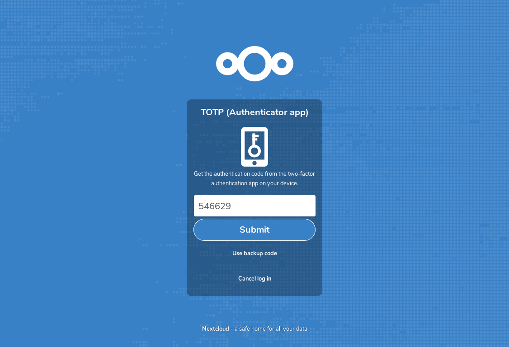

Using two-factor authentication
Two-factor authentication (2FA) is a way to protect your Nextcloud account against unauthorized access. It works by requiring two different ’proofs’ of your identity. For example, something you know (like a password) and something you have like a physical key. Typically, the first factor is a password like you already have and the second can be a text message you receive or a code you generate on your phone or another device (something you have). Nextcloud supports a variety of 2nd factors and more can be added.
Once a two-factor authentication app has been enabled by your administrator you can enable and configure it in Setting your preferences. Below you can see how.
Configuring two-factor authentication
In your Personal Settings look up the Second-factor Auth setting. In this example this is TOTP, a Google Authenticator compatible time-based code:

You will see your secret and a QR code which can be scanned by the TOTP app on your phone (or another device). Depending on the app or tool, type in the code or scan the QR and your device will show a login code which changes every 30 seconds.
Recovery codes in case you lost your 2nd factor
You should always generate backup codes for 2FA. If your 2nd factor device gets stolen or is not working, you will be able to use one of these codes to unlock your account. It effectively functions as a backup 2nd factor. To get the backup codes, go to your Personal Settings and look under Second-factor Auth settings. Choose Generate backup codes:

You will then be presented with a list of one-time-use backup codes:

You should put these codes in a safe spot, somewhere you can find them. Don’t put them together with your 2nd factor like your mobile phone but make sure that if you lose one, you still have the other. Keeping them at home is probably the best thing to do.
Logging in with two-factor authentication
After you have logged out and need to log in again, you will see a request to enter the TOTP code in your browser. If you enable not only the TOTP factor but another one, you will see a selection screen on which you can choose two-factor method for this login. Select TOTP:

Now, just enter your code:

If the code was correct you will be redirected to your Nextcloud account.
Muista
Since the code is time-based, it’s important that your server’s and your smartphone’s clock are almost in sync. A time drift of a few seconds won’t be a problem.
Using two-factor authentication with hardware tokens
You can use two-factor authentication based on hardware tokens. The following devices are known to work:
TOTP based:
FIDO2 based:
Using client applications with two-factor authentication
Once you have enabled 2FA, your clients will no longer be able to connect with just your password unless they also have support for two-factor authentication. To solve this, you should generate device specific passwords for them. See Manage connected browsers and devices for more information on how to do this.
Considerations
If you use WebAuthn to login to your Nextcloud be sure to not use the same token for 2FA. As this would mean you are again only using a single factor.